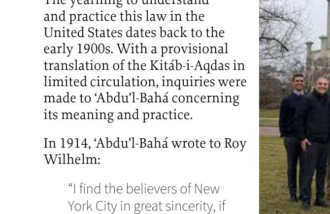
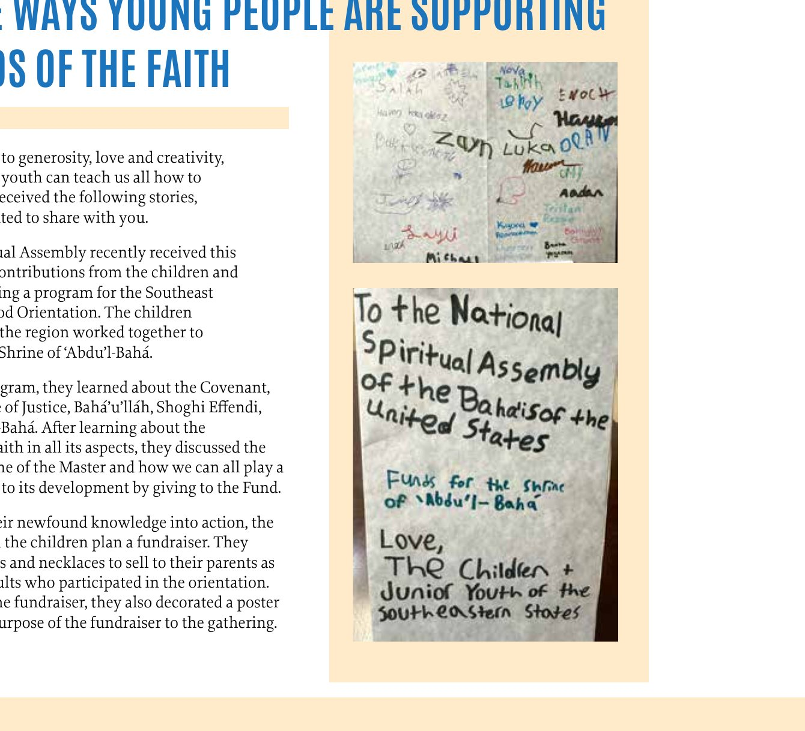

About this issue. This issue explores the many ways creative expression can contribute to the transformation of individuals and communities, from music and visual art to the creative practices woven into grassroots efforts. The stories that follow offer glimpses of communities drawing on imagination, art and spiritual insights to contribute to the betterment of humanity.
“Indeed the arts as a whole, so integral a part of the development of a community from the start, stand out in such settings as an important means of generating joy, strengthening bonds of unity, disseminating knowledge, and consolidating understanding…”
The Universal House of Justice
About the cover. “As an Iranian-American Bahá'í artist, much of my painting practice attempts to imagine a homeland I do not know, while reaching for a future uniting people, land and spirit. This painting is simultaneously nostalgic and hopeful, evoking a community built into the landscape. Natural beauty merges with the beauty of service and stewardship of the earth, inspired by community-building activities we are undertaking in New York City. References range from my landscape photography in the Northeastern United States, to photographs sourced of Iran and Yemen where my grandparents grew up, and finally to the curving calligraphy of the Greatest Name, which I used as a template for the tumbling hills of the farmland.” Juliet Bogan
Collage illustration from the issue
The Louis Gregory Bahá'í Institute continues legacy of race amity work
Earlier this year, the Bahá'ís of the United States addressed a message titled “A Common Endeavor” to every soul who holds “the promise of America in their heart.” The statement describes the common endeavor that has brought America to this moment in history, acknowledging the generations that have labored to realize the ideals on which our country was founded, in order to “build a more perfect union where all can flourish.”
Currently, Bahá'ís' contributions to this common endeavor build on the foundation laid by previous generations. The Louis Gregory Bahá'í Institute (LGBI), named after early American Bahá'í and race amity leader Louis George Gregory, carries on the legacy of Gregory's unifying racial justice work through community-building spaces and efforts.
Located in Gregory's home state of South Carolina, LGBI is an education and retreat center dedicated in 1972 and home to half a century of community-building work. In recent years, LGBI continues to contribute to the training and empowerment of young people centered on the principle of the oneness of humanity.
The Louis Gregory Bahá'í Institute in Hemingway, South Carolina.
Gregory was born in Charleston, South Carolina in 1874 to a family that fostered in him spiritual virtues and the love of God. Education was highly valued and Gregory was devoted to his studies. He attended Avery Institute in Charleston, before studying at Fisk University and then Howard University Law School. Soon after becoming a Bahá'í while living in Washington, D.C., Gregory met ‘Abdu'l-Bahá during his pilgrimage in 1911. His marriage to Louise Mathew in 1912 was encouraged by ‘Abdu'l-Bahá and became the first interracial marriage of Black and white Bahá'ís. Gregory welcomed ‘Abdu'l-Bahá to the United States and arranged for His historic talk to about 1,600 people at Howard University in 1912.
That pure soul has a heart like unto transparent water. He is like unto pure gold. That is why he is acceptable in any market and is current in every country.
‘Abdu'l-Bahá, of Louis Gregory, 1920
Gregory served on the National Spiritual Assembly of the Bahá'ís of the United States for many years. A gifted public speaker, he travelled to 46 states as a traveling teacher, and a champion of the Tablets of the Divine Plan and all Plans that followed. He was a key participant of the first Race Amity Convention called for by ‘Abdu'l-Bahá, as well as conferences throughout the country that followed.
Gregory was appointed to the esteemed role of Hand of the Cause of God after his passing in 1951 by the grandson of ‘Abdu'l-Bahá and Guardian of the Bahá'í Faith, Shoghi Effendi. The work of the Hands of the Cause is the propagation and preservation of the unity of the Bahá'í Faith. Those appointed to serve in this role provide a unique service to the Bahá'í community. There are no living Hands of the Cause today, as they were only appointed by Bahá'u'lláh, ‘Abdu'l-Bahá and Shoghi Effendi. The function of the Hands of the Cause was carried into the future by the Institution of the Counselors, including Counselors, Auxiliary board members and assistants to the auxiliary board members.
In the century since Gregory first taught the Bahá'í Faith in South Carolina, there have been countless contributions made by individuals, communities and institutes to translate the Bahá'í teachings into reality.
Today, Gregory's childhood home in Charleston is a Bahá'í museum. The Louis Gregory Bahá'í Institute is located a few hours north, in Hemingway, and is home to Radio Bahá'í WLGI, which was also named in honor of Gregory's illustrious soul. Radio Bahá'í WLGI is a noncommercial radio station that started broadcasting in 1984. In addition to serving Northeastern South Carolina and Southeastern North Carolina, it can also be streamed online at www.radiobahai.us. Sacred writings are included in daily programming, alongside community-building news and uplifting music. Both the institute and the radio station have touched generations of souls.
Some of those souls influenced by the Louis Gregory Bahá'í Institute returned to the property in 2022 to celebrate its 50th anniversary. The anniversary program highlighted the Institute's history and also allowed friends to consider its future. There were friends in attendance who had previously received training at the Institute that decades later they were applying in their lives. At the celebration, participants honored Gregory and considered how serving their communities can continue the legacy of the Hand of the Cause.
Its programs host children's and junior youth camps, devotional gatherings and institute training courses. It is also used for unit convention and seasonal schools. Most recently, it was the training ground for the Southeast Region's Summer of Service program, hosting 25 youth along with tutors, who prepared for their summer service through study of institute materials. The youth, of many races and faiths, engaged in conversations that invoked Gregory's pioneering work to the current needs of this country. They studied and memorized the Word of God, they prayed and called on divine assistance, they built friendships across what society deems as impermeable racial walls, and they steeled themselves for a summer and life of service.
Panel participants share the impact of their experiences at LGBI over the decades at its 50th anniversary celebration in 2022.
The beautiful Louis Gregory Bahá'í Institute property is always in need of care and attention. The Regional Bahá'í Council of the Southeastern states warmly welcomes friends who are interested in serving in this unique location to send an email inquiry to secretariat@rbcse.org.
A great exhilaration
In its message of December 31, 2025, the Universal House of Justice drew renewed attention to the imperative of teaching the Bahá'í Faith, observing that “believers increasingly appreciate the privilege of being able to acquaint a soul with the mission of Bahá'u'lláh—and, beyond this, to lovingly help a soul who stands at the doors of the Faith to step within.”
Participants of the 2026 Summer of Service in the Southeast visit the Louis Gregory Bahá'í Museum in Charleston.
Hand of the Cause of God Louis G. Gregory wrote: “There is indeed a great exhilaration in the teaching service…. I hope you will use every endeavor to teach. It is the most confirmed of all human activities, the most productive of results.” What teaching methods did Gregory use that we can learn from?
When Gregory became a Bahá'í in 1909, he immediately began teaching within his professional, academic and social circles, inspired by Bahá'u'lláh's injunction to “… bestir yourselves as soon as ye recognize your Lord…. Unloose your tongues, and proclaim unceasingly His Cause.” As the President of the learned Bethel Literary and Historical Society, he immediately arranged four presentations which had a powerful influence.
Bahá'u'lláh declared that “the movement itself from place to place, when undertaken for the sake of God, hath always exerted, and can now exert, its influence in the world.” In 1910, Gregory embarked on his first independent travel teaching journey. Years later, he recalled that “in every city, people were found who accepted the great Message, however crudely and abruptly given, and the spirit was powerful.” He tailored his talks and newspaper articles to specific audiences addressing racial amity and unity, comparative religion and the Bahá'í principles.
As part of the 1919 systematic program for teaching in the South, Gregory and another early African American Bahá'í, Roy Williams, formed a traveling teaching team for nine months. The Star of the West reported that the two souls “are sending in lists of those interested, showing splendid results, and are most happy in the work.” Fully aware of the dangers, Gregory undertook at least three trips as part of a team of interracial teachers. In 1931, Gregory and Willard McKay, who became a Bahá'í in 1925 and had lost his job as a professor because of his outspoken friendship with people of all races, set out on an 18-day teaching trip. Described as “two tall men, one dark, one very fair, both radiant,” they did everything together, to the astonishment of those who met them.
Gregory and his wife Louise Mathew Gregory, who was an experienced international pioneer and spoke fluent French, pioneered to Haiti in 1937. Gregory was 63 years old and Mrs. Gregory was 71. They were able to meet people of culture and capacity, and the young intelligentsia, and held study classes for them twice a week. They also found a translator and held study classes in Creole.
Gregory was among the first to carry out intensive teaching, as early as 1920. Shoghi Effendi describes the objective of intensive teaching as the establishment of “a small group of well-confirmed, devoted and active believers who will be able to carry on the work after [the traveling teacher's] departure.” In 1939, Lydia Martin was the Dean of Women at the Arkansas Agricultural, Mechanical, and Normal College in Pine Bluff, Arkansas. Her parents had been taught the Faith by Gregory in Cleveland, Ohio, in 1913. Through her efforts, the College invited Gregory to be their speaker during Religious Emphasis Week, and he stayed for two months.
Gregory also taught the Faith through correspondence. Gregory “had friends whom he wrote in all age groups and students in every colored college and university in the land. He always answered every letter…”
Photograph, Crown Heights, Brooklyn
New Yorkers create more unified communities through the arts
How can the arts bring neighbors together and create spaces for deeper connection and collective problem-solving? New youth initiatives in New York City inspired by Bahá'í teachings, some centered around thought-provoking films or painting with children, are demonstrating the power of shared artistic expression. In both cases, the impetus came from a community's creative interests.
“Our initial film gathering was meant for our community—friends, neighbors and strangers—to come into my home and share a meal before we watched a selection of short films revolving around a theme,” says Felicia Sobhani. She and her partner Christian Guaman are cinephiles, and see film as a shared language. “It's how we, as artists and people of wildly different backgrounds, found commonality, moved by narratives and storytelling,” says Guaman. “We'd leave a film and think, ‘More people need to see this.’”
Noticing “how films spoke to each other,” Guaman says the idea was sparked to use this artistic medium to start neighborhood conversations around topics of concern. Sobhani and Guaman spread the word to their Harlem neighbors and friends, many of whom walked over, that the evening's selections would center around children and the collective responsibility to care for them.
Sobhani says, “People entered our home with such zeal. Before the screening started, we took a moment to admire the room filled with an array of people. The diversity was so rich – it alone made the night worthwhile.” After chatting over dinner and experiencing the films, participants shared what resonated with them and “how they wanted to show up for children,” says Guaman. Inspired, the group shared a prayer for the children in their lives and community.
Community members watch a film during a devotional gathering at Felicia Sobhani's home.
Across the bridge in Crown Heights, Brooklyn, Juliet Bogan decided to put brush to canvas at a local park. Bogan enjoys oil painting, and brought her supplies to express creativity in the open air. Aware that children might ask to join, she also brought along washable children's paints, a pad of paper and extra brushes.
Painting with children at the plaza in Crown Heights, Brooklyn.
And paint I most certainly did not! The arts are magnetic.
Juliet Bogan
As she prepared to paint, more than half a dozen children and their parents gathered around her. Using three nearby tables, Bogan spent the afternoon guiding the expanding group of children and getting to know the families. Since then, the classes are held weekly in this same plaza. Friends from the neighborhood, many of them youth, are now supporting the effort. As a result, relationships among a growing group of families living in the complex adjacent to the park are developing.
The painting table at the plaza in Crown Heights: a watercolor set, children's brushes, and the portrait captioned I am kind, loving, and friendly.
The public kids' painting activity led to meeting the president of the complex, who invited Bogan and her collaborators to Family Day, a day of food and fun, gathering organizations supporting the community. There, an art activity for kids drew in more families, and provided a chance to converse with parents about family needs, including childcare and activities for children and teens that help them develop capacities, both practical and spiritual.
Come make art: the invitation on the park bench, with Ruhi Institute books and a sign-up sheet for the Art and Heart community-building initiative.
Roses, stars and a quotation to color: “O Friend! In the garden of thy heart plant naught but the rose of love…”
Bogan says, “I realized [while] observing the children that the arts are an incredible way to . . . think deeply about our communities, to treat each other with love and respect and to imagine the future reality we want to build.”
The joy created in both of these activities structured around the arts has been immediate and plentiful. Sobhani says, “For months we wanted this space, and just as often we'd get lost in the planning and then talk ourselves out of hosting. But the night moved on its own, easy and joyful, like it had been waiting for us to get out of the way.”
“We're hoping to make these film deepening spaces a regular home for our community,” adds Guaman.
Using the arts in community is valuable. Bogan says, “When we know that art is a tool for connection and worship, we will see that our mutual understanding of each other, our capacity to empathize, our consultations, our ability to imagine new realities, our centering of youth, will all be strengthened… When we bring that world into our communities, we open up new avenues for experimenting, for supporting each other, for playing.”
These artists found their passions a catalyst for new connections. Sobhani says, “It was a night of genuine friendship, with everyone meeting someone new.” Her friend Jan, an elderly neighbor at the inaugural film gathering, said, “We need more of this.”
Two artists reimagine the role of art through a spiritual framework
At an exhibition during this year's Los Angeles Design Weekend, visual artist Maya Mansour overheard the curator explaining the Bahá'í calendar to visitors who had stopped to admire it. The Bahá'í calendar, which is composed of intercalary days alongside 19 months named after various divine attributes, such as splendor, beauty and light, was the subject of Mansour's recent design project and had caught the attention of the exhibition curator.
The moment affirmed Mansour's hope behind the project: Thoughtfully designed artwork can spark curiosity and attraction to the Faith. “I really changed the way that I think about being an artist and teaching the Faith,” Mansour says. “These systems that we have — like our calendar — lend themselves so beautifully to artfulness and thoughtful design.”
Mansour, a photographer and co-founder of the nonprofit Black Image Center, created the calendar after realizing that the rhythm of Bahá'í life was not reflected in the Gregorian calendars she used every day. What was initially a personal project grew into Studio Kam Kam, an initiative named after ‘Abdu'l-Bahá's phrase “little by little, day by day” that brings together artists and designers from different religious backgrounds to create intentionally designed Bahá'í goods for everyday use. For Mansour, the project has unfolded alongside her own understanding of how art and beauty can make spiritual ideas accessible beyond the Bahá'í community itself.
This year's calendar was co-designed by Natal, a Dutch musician and graphic designer who is not a Bahá'í. “I found his work on Instagram,” Mansour says. “I got an ad for a concert and I really liked the design of the flyer, and I reached out to him and I asked if he wanted to help me.” Together, they created the visual direction for the calendar, drawing inspiration from vintage Bahá'í book covers and old pamphlets from the 1970s and '80s that were used to teach the Faith. “It was just such a delightful experience, and it ended up being so fun to share the Faith with someone [simply] as a collaborator,” says Mansour.
Maya Mansour adjusts her Bahá'í calendar for a Los Angeles Design Weekend exhibition.
For musician and sound artist Calla Paleczny, the Bahá'í Faith influences her creative projects in unconventional ways. While her early expressions of Bahá'í-inspired art involved putting the Writings to music, she now uses her knowledge and experience with sound to “explore spiritual reality and expand the ways in which we engage with ideas of the divine.”
These systems that we have, like our calendar, lend themselves so beautifully to artfulness and thoughtful design.
Maya Mansour
Despite studying music extensively, Paleczny initially struggled with the idea of pursuing it professionally. “I thought because I love it so much, it's selfish,” she says. The Bahá'í teachings' emphasis on the value of the arts helped her to accept the idea that developing her abilities in music could be a meaningful way of contributing to the well-being of her community.
Like Mansour, her understanding of artistic practice positions the artist as responsible not only for personal expression, but for deepening collective understanding and contributing to the life of society. For her master's thesis concert, Paleczny created a piece imagining rocks and boulders becoming animate and floating through the sky like clouds. The composition grew out of several weeks she spent working at an open-pit gold mine, where the continuous sounds of grinding rock, moving earth and machinery seemed to “filter into” her body. The resulting installation used 10 speakers to create the sound of boulders moving and grinding overhead, while an ensemble below plucked instruments including cello, domra, jetigen and banjo.
The work reflects on the smallness of human beings in relation to geological time and larger forces of the natural world, and the possibility of imagining the “aliveness” of things we perceive as inanimate. Paleczny's thinking about the work is inspired in part by Bahá'u'lláh's mystical text The Four Valleys, which shapes her understanding of the different ways people can approach the divine. She believes that the mineral kingdom possesses spiritual potential, expressed within the limits of material reality and perceived according to the observer's own capacity. She offers resilience as one quality that might be especially apparent in minerals.
Calla Paleczny works on her master's thesis composition.
In guidance for the Bahá'í community, Shoghi Effendi discouraged the development of a distinct style of Bahá'í music, painting or writing, explaining that believers should be free to create according to their talents. “The further away the friends keep from any set forms, the better,” his secretary wrote, explaining that the Faith's universal character could not be confined to particular cultural forms. For Paleczny, this guidance has opened space to question some of the assumptions underlying music composition, which she explored in a presentation at this year's Association for Bahá'í Studies conference.
In conversation with The American Bahá'í, Calla Paleczny and Maya Mansour discuss the expression of their Bahá'í identities through art, how a spiritual framework can change the role of an artist in society, and the spiritual dimension of attraction to beauty. Responses have been edited for length and clarity.
How has the Bahá'í Faith changed the way you understand the role of an artist in society?
Mansour The Bahá'í Faith has influenced my approach to work in general. I think about that quote, “Work done in the spirit of service is the highest form of worship.” I try to reflect on that when I'm thinking about a new project or endeavor and make sure that everything I do has some element of service. I [also] feel like being an artist is just making a ton of decisions and then moving forward to the next one. It becomes quite an intuitive process. Outside of making art, I try to do things to protect and nurture my intuition, which I really think is my relationship with God.
Paleczny The Bahá'í perspective is of music being really valuable and that it can be a noble endeavor. There's a place for it to be a beautiful and important way of being of service. I remember looking towards the writings, to the guidance and the community itself. This notion of looking towards your own skills and capacities, the strong valuing of the arts, gave me permission to see value in it myself and begin to pursue it more directly as a profession.
What do you hope for your art to explore or express?
Mansour I mainly am a portrait photographer. My goal whenever I'm taking someone's portrait is for them to get those photos back and feel that they truthfully reflect who they are, what they look like and feeling that sense of satisfaction. That can be so rare. I know from experience.
Paleczny My primary interest in my art practice is to explore reality. My art making is always propelled by questions about the nature of reality and how we perceive it. My overarching desire is to use my knowledge of sound as a way of exploring spiritual reality and hopefully expand the ways that we engage with ideas of the divine.
Maya, what are your hopes for Studio Kam Kam?
Mansour Creating the calendar changed the way I think about being an artist and teaching the Faith. With Studio Kam Kam, I'm not making a Bahá'í-inspired calendar. I'm making a Bahá'í calendar. It just is Bahá'í. My number one goal is that someone walks into your apartment and they're immediately drawn to something decorative and they're like, “Oh my gosh, what is this?” And it's the Bahá'í thing. I think about the spiritual concept of attraction to beauty and using that as a teaching tool. What if you have this really amazing tote bag and someone stops you on the street and says, “What is that? What does that quote mean?” I know someone whose mom became a Bahá'í because someone in her city was wearing a pin that had ‘Abdu'l-Bahá's face on it. She said, “Who is that guy?” And they told her about the Faith. One of my other friends' [relative] became a Bahá'í because she loved the calendar system so much. She thought it was so cool and wanted to be part of it.
Calla, you've spoken about The Four Valleys as a text that opens up different ways of approaching the divine. How has that understanding shaped the way you think about art and music?
Paleczny I think the implications of a text like that is to call me into reflecting on how I am engaging with the different ways of approaching the divine within myself and with other people. The degree to which I am able to navigate the subject of divinity through a combination of both logic and music and art is also the degree to which I can invite others to engage in conversations about these topics. One thing that strikes me about the importance of The Four Valleys is that I think art sometimes can be perceived as entertainment or [solely] for feeling, as opposed to understanding that [art] is a way of transmitting knowledge that might not be possible to transmit through pure logic or rationalizing. It's something that contains a knowledge that can be felt, as opposed to it being something that only stirs up emotion, which I think is well expressed in this particular text. There's a degree of knowing that occurs when you intellectually know something, when you physically know something, and when your soul knows it. There are different degrees and I think that the arts and music are bringing us into a kind of embodied knowing.
What has the Faith taught you about the importance of beauty and art?
Mansour It can sometimes feel like no one cares about art – that being an artist is non-essential work. Going to Bahá'í Holy Places helped me realize that art and beauty are some of the most essential things.
Paleczny When I think about what has given me a sense of certitude about the Bahá'í Faith, it's not only what's written in the Writings. It is the actual beauty of the Writings that gives me a sense of knowing.
50
Association for Bahá'í Studies at 50
Scholarship and knowledge in service to the common good
Ottawa, Canada — Scholarship is often imagined as solely the work of specialists, carried out in universities and published in journals. Over 50 years of experience within the Association for Bahá'í Studies (ABS) is pointing toward a broader conception: every person can contribute to the generation of knowledge, and countless social spaces can become a setting for the search for insights that advance human well-being.
This idea permeated the Association's 50th annual conference, which in August brought some 2,100 participants to Ottawa. The gathering began with 16 two-day seminars examining fields including health, technology, media, education, the arts, mental health, scientific inquiry and community-engaged research, among others. A parallel program, organized by the Institute for Studies in Global Prosperity, brought together youth aged 15 to 21 to consider the relationship between their studies, work, service and contribution to the life of society.
A panel at the Association's 50th annual conference in Ottawa.
Central to these efforts is the purpose of the Association. Shabnam Koirala-Azad, chairperson of the ABS executive committee, described it as creating opportunities for academics, professionals and other interested participants to bring principles from the Bahá'í Revelation into the academic and professional discourses of society, illuminating these areas of human endeavor. Todd Smith, secretary of the executive committee, emphasized that such correlation also moves in both directions: engaging with insights found in wider bodies of knowledge from diverse fields can deepen participants' understanding of the Bahá'í writings.
An expanding field of inquiry
The Association was established in 1975 by the National Spiritual Assembly of the Bahá'ís of Canada. Eighty people attended its first annual conference in Bolton, Ontario. From these beginnings, the Association sought to foster intellectual engagement with the Bahá'í teachings and with questions confronting society. A publishing program began almost immediately, creating avenues for scholarly writing that could also speak to a wider audience. Lectures and conferences were held in university settings, campus associations emerged and students found spaces to consider questions arising from their studies in light of Bahá'í principles.
David Smith was among those involved in the Association's early development and later served as a member of the Board of Counsellors in North America. He recalled being drawn to the possibility that people looking for answers to the problems of society could encounter insights from the Bahá'í teachings in settings of higher learning. The Association, he said, became “this instrument of learning.”
The Association's mandate expanded across North America in 1981, and the Centre for Bahá'í Studies opened in Ottawa the following year. The Journal of Bahá'í Studies, established in 1988, provided another increasingly rigorous way for scholarship to contribute both to the intellectual life of the Bahá'í community and to wider academic conversations.
At a time when scholarship on the Bahá'í Faith outside Persian- and Arabic-language contexts was still limited, the Association helped create settings in which such work could develop and enter broader intellectual conversations. Roshan Danesh, a former member of the executive committee said that from the outset, the Association's concern extended beyond the study of the Bahá'í Faith itself to correlating the Bahá'í teachings with contemporary thought.
According to Pierre-Yves Mocquais, another former member of the ABS executive committee, the Association's experimentation is a key feature that stands out across decades. New approaches unfolded through consultation with Bahá'í institutions as the Association sought to understand how its work could respond to changing needs.
Julia Berger, who also previously served on the executive committee, recalled early efforts where several people from a similar field would sit together in what were called “fishbowl conversations,” thinking aloud about questions in their disciplines through the lens of Bahá'í principles and experience. Berger described what followed as a “steadfast, dogged commitment to iteration and reflection.” Those relatively simple beginnings gradually contributed to the more intensive seminars now held throughout the year and before the annual conference.
Some 2,100 participants attended the August conference.
David Smith similarly recalled the movement from a conference culture largely centered on lectures toward settings in which participants themselves became more actively engaged in sustained inquiry. Learning to learn, he said, is something the Association has become increasingly capable of fostering.
A further significant milestone in this continuing process came with guidance addressed to the National Spiritual Assembly of Canada by the Universal House of Justice in 2013. It encouraged the development of settings in which people from similar academic disciplines could examine the prevalent discourses of their fields and highlighted the contribution the Association could make as rising generations entered diverse fields of human endeavor.
By then, capacities being developed through grassroots efforts of the global Bahá'í community for systematic action and reflection, consultation, and the application of spiritual principles to social reality were increasingly finding expression within the Association's approaches. “The evolution of the Association is a direct reflection of the capacities that are being built in the Bahá'í community outside of ABS,” said Mariam Ashtiani, a sociologist and member of the executive committee.
Experiences arising from community-building and social-action initiatives, she explained, provide insights regarding how spiritual principles can be applied to lived reality rather than remaining at the level of abstraction. The habits of consultation, learning and reflection developed through such experience have, in turn, enriched how participants approach questions in their academic and professional fields.
Ashtiani stated that “the conference historically was seen as the main vehicle” of the Association's work. Increasingly, it has become an “inflection point” where threads of inquiry pursued throughout the year converge. The Association continues to value the specialized contributions of scholars, she said, while a broader picture has emerged over the last fifty years: professionals and students, together with all others engaged in grassroots efforts can take part in this process.
Research with, rather than on, communities
Valentina Muraleedharan, a geographer and educator, helped facilitate a seminar on participatory action research (PAR), an approach that enables communities to take an active part in investigating their own social reality and in considering responses to the conditions they identify.
Traditional research, she explained, can begin with someone entering a community from a university setting with a question already defined. Drawing on the work of PAR scholars, she noted that participatory approaches instead recognize that people living within a community possess knowledge of their own experience that cannot simply be substituted by outside expertise. The Bahá'í principle of the oneness of humanity carries this idea further. Muraleedharan described how it can soften assumptions of a fixed division between the researcher and those being researched.
There's no insider / outsider when it comes to doing research with a community. Rather, one sees themselves as part of that community, and the challenges they face as their own challenges.
Valentina Muraleedharan
Universal participation, meanwhile, has implications for the meaning of justice in research. A just process cannot be considered solely in terms of the eventual findings or benefits. It also raises questions about who helps identify the problem, formulate the questions, interpret experience and determine what action should follow. “Who is participating in that research becomes really important to achieving a just outcome and a just process,” Muraleedharan said. Research approached in this way can become part of building a community's capacity to understand and respond to its own reality, rather than merely producing knowledge about it.
A seminar presentation at the conference.
From individual health to the health of a social body
The principle of oneness has also influenced the direction of Jasmine Miller-Kleinhenz's work in population health. Miller-Kleinhenz, a molecular biologist and member of the executive committee, initially worked on developing treatments for an aggressive form of breast cancer that appeared disproportionately among certain populations of women. Common explanations often pointed to ancestry or characteristics presumed to be inherent in those populations. Yet, she said, the scientific evidence did not adequately support such assumptions.
Reflecting on the Bahá'í conception of humanity as one family prompted another line of inquiry: What conditions were these women living within, and might those conditions themselves leave a biological imprint? Her research began moving outward from the molecular processes within individual bodies to the social and physical environments in which people live, examining access to nutritious food, quality education, green space, and other social conditions, and considering how environments shaped by collective decisions can become embodied in an individual's health outcomes.
For Miller-Kleinhenz, the principle of oneness did not generate a scientific conclusion. It helped make another scientific question visible. “It can't just be something nice that I do on the side,” she said of the effort to apply spiritual principles to daily life. “It also has to shape my research questions.”
Making the assumptions within technology visible
Adib Shafipour, a researcher working on artificial intelligence applications for disease detection, described an exercise he introduced while teaching biotechnology. Students were asked to identify assumptions contained within the technologies they were studying. Shafipour explained that technologies are often described as neutral tools. Yet their design inevitably reflects ideas about what should be optimized, which needs matter, what constitutes progress and how a human being is understood. This becomes especially consequential when the dominant image of the person is that of a consumer whose participation consists chiefly in adopting what has already been produced.
A Bahá'í conception of human beings as protagonists with the capacity to consult, make choices and contribute to their collective life opens another possibility: Communities themselves can become more capable of considering what technologies they need, for what purposes and their likely effects on their relationships and culture. Such examples are modest, Shafipour emphasized, but they suggest that meaningful participation in technological choices need not be restricted to technologists.
Rethinking the starting point of political thought
Michael Sabet, a PhD candidate in political science and the editor of The Journal of Bahá'í Studies, helped facilitate a seminar examining alternatives to political partisanship and polarization. Much political thought, he explained, begins with individuals or groups who are understood to have differing interests. The problem of politics then becomes how those competing interests are negotiated, balanced or contested. “If our beginning assumption… is the oneness of humanity, then the discussion begins on a different footing,” Sabet said.
He drew on the Bahá'í analogy of humanity as a single body. The needs of its different parts are distinct, yet the well-being of one cannot ultimately be secured through the deprivation of another. Applied to political thought, this shifts attention beyond how competing groups can obtain their share, and directs it toward how diverse needs can be understood within the well-being of the whole. Sabet explained that the Bahá'í principle of consultation offers a means to make that shift. It creates a setting in which differing perspectives can be examined together and gradually brought into a shared understanding that can guide collective action. As he put it, “If people come together with the right methodology,” they can arrive at such unity of understanding.
A growing circle of contributors
For Nwandi Lawson, a media practitioner, the widening conception of Bahá'í scholarship is reflected in her own relationship with ABS. “I assumed, as a media professional, ABS is not for me, so I excluded myself,” she recalled. It was only after someone encouraged her to participate that she encountered collaborative spaces in which her professional experience could become part of a disciplined examination of the assumptions shaping media. This year, one detail stood out to her: A Grade 12 student was among those taking part in the seminar on media and society. Experience remains essential, Lawson said, but a field becomes richer when people just entering it can think alongside those who have worked within it for decades.
That intergenerational dynamic was also reflected in the conference's dedicated program for young people. High school and university-age participants examined how their education and eventual professions can form part of a coherent life of service, alongside participation in community-building efforts and social action.
Underlying this widening participation in ABS forums, Todd Smith suggested, is a posture of humility: participants diligently pursuing this work while also seeing themselves as being “on the same path of service where everybody has something to contribute.”
Quilt art by Helen Butler
Communities engage in a common endeavor
In the months since the National Spiritual Assembly shared “A Common Endeavor,” a message laying out the Assembly's vision for the United States, Bahá'ís have been creating opportunities to introduce the message's uplifting and pragmatic content and concepts to their friends and neighbors. Here are glimpses of some of the creative efforts supported by the resources found at acommonendeavor.org.
Sarasota-Manatee County, Florida: Practical steps to oneness
In July, the Bahá'ís of Sarasota-Manatee County, Florida, invited people to a conference focusing on our oneness as a single human family and promoting consultation for problem solving and community building through inclusivity, understanding and detachment. Nearly 50 participants, representing a variety of ages and backgrounds, came together to listen, learn and reflect on the process of consultation. The conference demonstrated that the principles of consultation and the vision of human oneness are not merely subjects for academic study, but living practices to be integrated into the fabric of daily life.
Table discussions allowed people to explore the shared themes with attention to practical ways to bring people together. The YouTube video “Oneness” fostered additional discussion. Youth attending helped capture the spirit of the conference through their creativity and dedication. Abbie Khoshnood created art that was photographed by Seneca Bristol, Sisi Lino and Teresa Pettersen.
Pima County, Arizona: Multifaith gathering
In August, the Bahá'ís of Santa Cruz and South Pima County, Arizona, invited local faith communities to gather for a conversation around the themes of “A Common Endeavor.” Presentation copies of the message and invitations were mailed to 17 faith communities in the cluster. Fifteen members from three faith groups, Baptist, Presbyterian and the Unity Church, joined an equal number of Bahá'ís at the event.
The opening presentation tied the Bahá'í ideals and values in “A Common Endeavor” to America's foundational documents: The Declaration of Independence, the U.S. Constitution, the Bill of Rights and specific amendments. Discussion of spiritual renewal ensued, emphasizing movement from the individual to faith communities to the wider community and nation. The “Oneness” video, a few closing remarks, and a reading of The Prayer for America rounded out the program.
Arizona: after the showing of the “A Common Endeavor” video, Glenn Nerbak gives a historical overview of the values expressed in the message.
Rutland, Vermont: Sharing at the Rotary Club
In August, Alis Headlam, a Bahá'í, shared themes from “A Common Endeavor” with the Rutland City Rotary Club at its weekly meeting. A high level of participation was facilitated by an interactive slideshow, which invited people to take turns reading aloud and commenting on each section.
A Rotary Club member who organizes donations and service for a local food assistance program raised a concern. The program serves more than 400 people a week and provides more than 2,000 meals a month. He wondered how to bring those being served into conversations and offering solutions, so that they might better recognize their own role in the community. A long-term consultative project, following the process of study, consultation, action and reflection was suggested. One attendee said the presentation made him think about how a simple smile or a wave had the potential to help people feel more welcome in the community.
San Francisco cluster: Institute study seminar
About 40 people studied “A Common Endeavor” as part of an institute study gathering. Across the seminar, the material stimulated thoughtful conversation, deepened understanding of the institute process and inspired participants to continue walking a path of service together. Subgroups drew insights from their own levels of experience. One group was composed of several college students who had little prior experience with the Faith. Their conversation revolved around the important role that youth play in forging relationships that will contribute to the spiritual progress of society.
Another deep conversation took place with a group of Nepali parents whose children participate in children's classes and the junior youth spiritual empowerment program. They said that the message provided a clear and inspiring picture of the purpose underlying this educational process for their children. They said they could see a broader vision of community building, inspiring them toward participating more fully through regular study of the main sequence of courses. The parents shared that several passages touched them deeply, such as those describing the power of loving conversations and the central role of divine love in contributing to social transformation.
Benton County, Oregon: Sharing the message re-energizes community
In rural Benton County, Oregon, one Bahá'í couple shared an invitation to reflect on “A Common Endeavor” using a community listserve. The postings range from lost dogs to cougar sightings to community announcements, and the couple, Paula and Robert Siegel, were very careful to craft an invitation that was respectful of the space. “We wanted the wording to be welcoming and not [proselytising] in any way,” Robert says. “We wanted them to feel like we're all working together.”
In response, a mix of Bahá'ís and friends of the Faith gathered at the Siegel's home, where they reflected together and shared their “small acts of service.”
These little acts of service really are contagious. And they may be small, but they motivate others and they're important.
Paula Siegel
Grass Valley, California: Engaging families through art
Neighboring communities of Grass Valley, Nevada City, and Nevada County, California, shared 30 copies of “A Common Endeavor” at a Bahá'í and Brilliant Star booth at a Juneteenth celebration hosted by like-minded organizations. Art drew people to the booth and opened hearts. A brightly-illustrated Brilliant Star banner and examples of art and craft projects from the magazine attracted and engaged children. The Bahá'ís at the booth shared 45 copies of Brilliant Star magazine on themes of the oneness of humanity, racial justice and racial harmony.
A sculptural art piece of diverse dolls linked arm-in-arm created by Helen Butler, whose artwork appears in “A Common Endeavor,” drew the adults, sparking in-depth conversations about the Bahá'í Faith and people's deep aspirations for this country.
Lisa Blecker, Lesley Platner and Shiva Reader at the Brilliant Star booth, Grass Valley Juneteenth celebration.
In Ohio, the Yellow Springs News published “A Common Endeavor” in three installments. The publication was made possible through the efforts of the Local Spiritual Assembly, which shared that the paper's editor received the letter warmly and remarked on its timeliness.
Illustrated by Aria Ghalili
Sparkling spirits in Indianapolis
Two years ago, pioneers in the Westlake neighborhood of Indianapolis helped their young neighbors raise $1,500 towards transportation so they could attend Midwest Region camps for youth and junior youth. They did yard work and other odd jobs, and the fundraising was a huge success. But promoting, tracking and carpooling the participants proved to be quite the undertaking.
Upon reflection, they realized a previously organized car wash had yielded the best return for the amount of work, so they planned and promoted another. One blistering June morning, attendees of a breakfast and devotional program at the local Bahá'í Center were offered a car wash service by youth volunteers.
Hosting a car wash sounds simple, but there was much to consider: What supplies were necessary? Should they work in teams? How much would they charge? How would they track people, cars and electronic payments? How should they present themselves to customers? It became an opportunity for open consultation, listening, learning, kindness and commitment. Four youth, between 14 and 17, washed 10 cars in two hours, earning $215 towards their goal. Happy customers went home in sparkling cars that matched their sparkling spirits.
The full issueThe National Spiritual Assembly's mid-year letter and the departments of the printed issue
From the National Spiritual Assembly
Mid-Year Reflections on the Progress of the Faith in the United States
October 21, 2026. To the American Bahá'í community.
Cherished Friends and Coworkers,
With feelings of profound gratitude to the Blessed Beauty, we convey our deepest love and abiding admiration for each and every one of you, the precious souls who, enkindled with His love and inspired by His world-unifying vision, are striving to fulfill the overarching aim of the Nine Year Plan—the “release of the society-building power of the Faith in ever-greater measures.”
As we now cross the midpoint of the Plan, the National Spiritual Assembly wishes to offer some reflections about the progress of the Faith in this country in the context of the forces operating in our nation. What follows is intended to underscore three essential points.
The first is the marked increase in receptivity to the teachings of the Faith and the willingness of our fellow citizens to apply the insights they derive from them together with us in the field of action. Exhaustion and anxiety are the inevitable consequences of the forces of disintegration that have been operating with increasing intensity over the past several years. But they are now yielding a deep yearning for something better. In their hearts, Americans increasingly realize that they must discover a vision that transcends current divisions, paralysis, and mistrust, together with a practical means of bringing that vision to reality. In other words, they are looking for hope.
Second, the means of offering that hope are being increasingly manifested in clusters that have advanced the most. Our task is to create in every locality the spiritual refuges for which our countrymen are ever more in need. By this is not meant communities that are removed from the concerns of the world; rather, communities wherein growing multitudes can find the resources that empower them to become agents for their own progress and for that of society.
Third, youth especially are emerging as among the most eager of all to respond to the teachings of the Faith, the most ready to apply them in their lives, and the most effective champions of spiritual transformation. This is a development of enormous significance. The most dramatic period of the Faith's expansion in this country, some fifty years ago, was essentially a youth movement. We can now see a fast-growing contingent of young people ready to take on the task of carrying the Faith into the future. And they will be armed with insights and methods developed over the course of recent decades that will ensure the sustained growth of the Bahá'í community. Needless to say, they are not alone. People of every generation have their part to play, even as we all wish to do everything we can to encourage the rising generation.
In the recent series of Plans, we have traversed an ascending path of achievement. Thrilling peaks of attainment remain before us. Let us forge ahead with full confidence in the guidance of the Universal House of Justice, always widening the scope of our efforts in an attitude of learning. Following are some examples of how these dynamics are shaping our approaches and increasing our capacity to release the Faith's society-building power.
A Common Endeavor
The external affairs work at the national level saw important steps forward during the first phase of the Nine Year Plan. This year's public statement, “A Common Endeavor: Realizing the Promise of America,” addressed to “all who hold the promise of America in their hearts,” was issued for the 250th anniversary of the Declaration of Independence, an occasion that inspired thoughtful people everywhere to contemplate where we have come from as a nation, where we are now, and where we are going. In this moment of national reflection, it cast American aspirations for freedom, equality, and justice in the light of a movement towards the spiritual principle of the oneness of humanity. While acknowledging the challenges we face as a nation, it invites those who work and hope for the betterment of society to see their efforts as part of a spiritual renewal giving fresh life to long-standing ideals and cultivating new ways of living together.
The letter is the latest of our three increasingly public responses to developments in the life of this country: from our September 30, 2024, message to the Bahá'í community entitled “The Nine Year Plan and the Destiny of America”; to our 2025 National Convention live presentation, “A Common Endeavor: Building America's Future,” addressed to both Bahá'ís and their contacts; to this latest statement, “A Common Endeavor: Realizing the Promise of America,” written with a general public audience in mind.
Released in April 2026, it went through multiple drafts in a process of learning and refinement. It involved extensive consultation with Bahá'í collaborators, members of institutions and agencies of the Faith, and a range of social actors from the wider society. Participants came from diverse racial backgrounds and religious experiences, including people deeply involved in civil rights and social justice. The resulting statement was published in multiple formats and accompanied by supplementary material online (acommonendeavor.org).
A series of gatherings and encounters with leaders of thought were held after its release, at the Bahá'í House of Worship in Wilmette, in Washington, DC, and at the Bahá'í International Community's Office in New York. They explored themes in the letter: the role of religion in society; the importance of social trust and how it can be built; the need for spiritual renewal and the importance of love; and the role of the United States in the global community of nations. Speakers and guests included lawmakers and staffers; social advocates in civil society; prominent academics, activists, journalists, artists, and religious leaders; and United Nations officials. Our Office of Public Affairs spearheaded the effort, greatly assisted by Bahá'í collaborators with relevant networks.
Meanwhile, as was envisioned, Bahá'ís in different parts of the country have been using the letter as a resource for conversations with both new and existing contacts. It has offered an occasion to arrange gatherings, sometimes in collaboration with friends of the Faith. The varied formats and supplementary materials appeal to different groups. We have received reports that the letter stirs hope and a desire to act and to continue the conversation with others; that it helps people understand the Bahá'í Faith better; and that it constitutes a meaningful response to this moment in the life of the nation. People are relating to the way the principle of oneness is articulated. As would be expected, some aspects of it are challenging for some readers, which suggests that it is best shared thoughtfully as part of a conversation.
We have received numerous testimonials about the letter, among which is the following interesting example received from a Bahá'í youth who introduced it at her regular devotional gathering:
At one devotional, we read “A Common Endeavor” together. I chose to share it because it provided me with so much hope. It was the right length and included guiding questions. I set aside 15 to 30 minutes to read the letter. As we began, I realized this was not going to be a short endeavor. Participants wanted to slow down and discuss the letter. For an hour, we reread sections, sharing our understandings and pointing out details that stood out to us. “All of this is led by love,” one youth shared. “At the end of the day, you can never change the world alone, it is always with a group. The fact that we are together now [and] that there is a community built makes a change.” The youth talked about the difference between what society expects social action to be and what it can be. One participant shared that even if we are not protesting or changing legislation, community building is a step toward creating something valuable. [I]t became clear that conversations “when carried out with goodwill, fair-mindedness, a desire to learn and, most importantly, with love” resonated. Many youth shared that they often disengage from difficult conversations to keep peace within their families and sometimes feel ignored. Some decided to share the letter with their parents, while others reflected on changes they wanted to make in their own approaches to social action and discourse. One youth shared the letter with his dad, who had believed that while diversity was important, it inevitably led to conflict. Their conversation helped them explore how diversity is a pillar of the society they want to build. What started as a brief reading became a two-hour deep dive. The youth left feeling empowered. For many, the letter's message that “youth have a remarkable capacity to form relationships and contribute to change,” regardless of who they are, became a source of hope and promise.
Crossing the Threshold
In its letter to the Conference of the Continental Boards of Counselors dated December 31, 2025, the Universal House of Justice described some of the chief characteristics of clusters that had advanced beyond the third milestone of development. It is not our intention here to repeat them all, as the guidance is readily available to you. Instead, we would like to draw one important example that the House of Justice specifically cited. In reference to the teaching work, we find the following:
And the believers increasingly appreciate the privilege of being able to acquaint a soul with the mission of Bahá'u'lláh—and, beyond this, to lovingly help a soul who stands at the doors of the Faith to step within. In 2021 we drew attention to this infinitely precious moment in a spiritual journey. We have noted with interest that, since then, the friends in many places have focused attention on how to recognize when the city of the heart is open, and on the conversations that lead to this moment and that follow it. Much remains to be learned in this regard, both about how to discern receptivity in different settings and how to acknowledge when it has already matured into faith.
This passage notes the importance of having the ability to focus attention on a specific object of learning and then engage in a systematic process. The issue of declaration is now being explored in this country, with notable results. The following description is excerpted from a paper by our Learning Desk, which received reports from several clusters in the Atlantic and California regions:
The first step in the process of inviting individuals to enroll involves identifying signs of receptivity and readiness. Friends have commented that they see changes in the lives of receptive individuals that have come about as a result of studying the Bahá'í Writings. Many have started to pray and to say their obligatory prayer each day. Others have stopped drinking alcohol. These individuals are actively involved in the community-building process, are inviting their friends and family members to participate, and are teaching the Faith. When they refer to the efforts of the Bahá'í community they say “we” are carrying out this work. Friends have also observed a shift in the way that these individuals speak about the Person of Bahá'u'lláh. Their connection to the Faith is not merely participating in a set of activities, but there is a deeper, more personal connection to Bahá'u'lláh and recognition that He is the Manifestation of God for this day.
Their connection to the Faith is not merely participating in a set of activities, but there is a deeper, more personal connection to Bahá'u'lláh.
Learning Desk report
When friends observe these signs of transformation, they try to have a very explicit conversation about enrollment. In some instances, people did not even know that there was an enrollment process; they assumed that because they were involved in the activities that they were Bahá'ís. In other instances, it was clear that a personal invitation helped individuals to cross the threshold. Friends have emphasized that it is important not to assume that just because someone is participating in the activities, that an encouraging, one-on-one conversation is not needed. Where an explicit, heart-to-heart conversation about recognizing Bahá'u'lláh as the Manifestation of God for this day took place, the majority of friends indicated a willingness to enroll.
There have also been several instances of parents of children and junior youth who are participating in the educational programs of the institute declaring their faith. Home visits play an important role in this process as they provide a setting in which the parents are invited to pray and deepen their understanding of the Faith. Although these parents have seen signs of transformation within their children, being invited to participate in the institute themselves or to attend devotional gatherings or firesides gives them a vision of a community that they can see themselves as part of.
In instances where individuals felt that they could not live up to the standards of the Faith, friends commented that it was important to help them to understand that you do not have to be perfect to become a Bahá'í. It is simply that we must strive to follow the teachings. A young friend from California shared the following account of an interaction with a youth:
When [ ] mentioned that he loved the Faith but felt he had to “reach a certain point” before fully embracing the path, I paused and asked him, “Show me a perfect Bahá'í. Tell me a name.” He sat there quietly, thinking, but of course, no name came to mind. I told him that no perfect Bahá'í exists. God is perfect, but we are not, and our need for God is part of our spiritual growth. Being a Bahá'í is a learning process, and we will always be learners. I also shared that I had believed that I needed to be perfect first. I told him that I still do not know everything. I later mentioned that the time for voting was coming up and asked if he wanted to participate. He immediately asked, “Can I?” I explained that voting is a privilege for registered members of the Bahá'í community, and he said, very simply, “Okay, I'll do it.” He then asked, “How do I declare?” I told him it could be done online, and at that moment, he took out his phone and began the process. It all happened so smoothly that even I was surprised by how natural it felt.
In some instances, friends declared their faith in Bahá'u'lláh but had concerns about formally registering as Bahá'ís. This tends to occur most frequently among youth, who have to consider the dynamics of their home life. In such cases, the approach should be loving and encouraging, involving a conscious effort not to place any undue hindrance to their participation in the life of the community. Practical questions will undoubtedly arise, so this will be a particular arena of learning over the course of the coming cycles about which we will say more in due course. The hope is that, as new believers become ever-more confirmed in their identities as Bahá'ís, most will eventually choose to enroll. The essential thing is not to conflate declaration, the sacred expression of a person's relationship to Bahá'u'lláh with all that it entails, with the administrative process of enrollment.
There are clear results from focused attention on the question of helping people to take the step of declaration in their spiritual journeys. From 2022–25, the San Diego cluster, for example, averaged about three enrollments per cycle. This year, with concerted attention to learning about inviting receptive souls to openly embrace the Faith, the number has increased dramatically. There were 14 new believers in the first cycle of 2026, 13 in the second, and 13 more in the third. It is wonderful to consider how the declaration of belief can now be understood as a natural milestone in the life of a person already engaged in the activities of the Bahá'í community. Whether it is reached sooner or later depends upon the individual, as well as upon our wisdom in accompanying them on their path.
Enrollments per cycle, San Diego cluster
2022–25 average, then the three cycles of 2026
Race Unity
The National Spiritual Assembly's Race Unity Desk was created to explore the “profound alteration of thought” on this critical subject, as called for by the Universal House of Justice in its letter to our community dated July 22, 2020. Data obtained by the Desk through its 2025 and 2026 national surveys indicate that the American Bahá'í community is organizing no less than 700 race unity endeavors annually. The spectrum of efforts is broad. Individuals host friends for book clubs, neighborhood dialogues, historical studies, open houses, race unity dinners, as well as firesides and devotionals focused on race unity. Many communities are working with local governments and schools and are engaged in interfaith collaborations that promote justice and oneness; dozens are holding annual celebrations of Martin Luther King Day, Race Amity Day, and Juneteenth; several are bringing together diverse groups and exploring themes through arts, including singing, drumming, drama, film, and storytelling. A few communities have mobilized to help respond to incidents of hate. Alongside the wide array of efforts organized at the grassroots by individuals, communities, and institutions, a number of organizations spearheaded by Bahá'ís and focused on race unity and racial justice are also advancing systematically. From the estimates provided by the survey respondents, the total number of people impacted in some way is in the hundreds of thousands.
700+race unity endeavors organized annually
hundreds of thousandspeople reached, by survey estimate
2025 · 2026national surveys by the Race Unity Desk
It is important to remember that our efforts to establish unity and justice in this country are not confined to initiatives explicitly labelled as “race unity” activities. The community-building process, with the institute at its heart, is designed to foster the emergence of loving, inclusive communities where all can participate and contribute regardless of their background. Our ultimate success in purging this country of its longstanding prejudices depends upon it. After all, it is one thing to protest injustice; to build patterns of life that promote oneness is quite another. We should then ask:
How is the institute learning about overcoming racism through the establishment of just relationships among individuals, communities, and institutions of society that will uplift all and not designate anyone as “other”?
How has consciousness-raising about race unity been incorporated into the regular reflections of nuclei in centers of activity and across clusters?
Guided by the example of ‘Abdu'l-Bahá, what are those who are serving the institute learning about the importance of tact and wisdom in their efforts to promote race unity?
The contribution of the institute to race unity may often be found less in explicit conversations about race than in the new patterns of relationship and community life.
National Spiritual Assembly
One of the clearest insights gleaned from recent interactions with some Regional Bahá'í Councils and regional training institutes is that the contribution of the institute to race unity may often be found less in explicit conversations about race than in the new patterns of relationship and community life that the institute process makes possible. In the Triangle cluster in North Carolina, for example, about 500 children, junior youth, and youth from African American, Latino, white, immigrant, and other backgrounds participated in summer activities this year. Youth trained, studied, prayed, dined, and served together around a common commitment to the well-being of their communities. These spaces fostered sustained relationships among people who might otherwise have had little meaningful interaction with one another. Such relationships do not arise through happenstance. Deliberate efforts were made to reach populations throughout the area, including through partnerships with community organizations and schools serving historically marginalized populations and newcomers.
Attention was given to removing barriers to participation and creating conditions in which people could contribute confidently and feel that their perspectives were valued. Experience in that cluster suggested that sustained participation can gradually establish a culture capable of responding to prejudice from within. Youth who regularly participated in institute campaigns encountered orientations emphasizing equality, justice, consultation, respect, attentive listening, and the oneness of humanity. In one instance, when a young person spoke critically of Hispanic youth, others responded by affirming the culture they were striving to create. The example suggested that an important dimension of learning concerns how institute spaces can develop habits of behavior that make expressions of prejudice increasingly inconsistent with the community's own emerging way of life. An idea that arose from the consultation was that the opposite of oppression is not merely the absence of oppression, but empowerment.
To offer another example, in one neighborhood in the Prince William cluster in Virginia, African American and Latino parents described a marked contrast between certain environments in which their children were viewed primarily through the lens of deficiency and behavioral challenges, and institute spaces in which their nobility, capacities, generosity, and spiritual qualities were recognized and nurtured. As parents increasingly assumed responsibility for planning community gatherings, consulting together, and supporting the spiritual and material progress of their children, they developed a stronger sense of collective agency.
This experience shows that one important way the institute can contribute to racial justice is by fostering capacity among populations historically subjected to exclusion or disempowerment. Parents gaining confidence, communities developing the ability to consult about their circumstances, young people arising to serve, and residents taking increasing ownership of the spiritual and material well-being of their neighborhoods may themselves constitute significant dimensions of the process through which oppressive relationships are gradually replaced by just ones.
The following testimonial received from a Navajo youth who participated in a community gathering that centered on young people at the Native American Bahá'í Institute beautifully describes the importance of the institute process:
It's a pretty common fact that education and support for the Indigenous people, especially in places like Houck and Sanders isn't the best. And even in this community, when Bahá'ís may face prejudice and judgmental misconceptions, we provide the resources and support that the Indigenous young people of my community need. I've personally seen my friends in the process use their powers of expression to verbalize their thoughts and build their own relationship with God. The process has helped in shaping the way they view their own personal experiences, growing up in a native environment where things like education aren't prioritized… It is undoubtable that the Bahá'í philosophy, identity, and way of living will make the world a better place. My native culture and environment suffer from oppression and conditions which can make it hard for these Bahá'í beliefs to thrive. But that's exactly why my community needs it, and it makes me so happy to see the change and positive impact the process is providing. Another thing it provides is space where native youth and junior youth feel comfortable to be themselves. I've seen kids in the middle school who were bullied and afraid to be outgoing shine in the afterschool programs, not only as the person they were but as the person who is building a relationship with God and a Bahá'í identity. By the time I'm in my 30s when this process of plans is over, I hope to see native youth who have the education and spiritual strength to accomplish what they want to do. Not only do our Bahá'í and Bahá'í-inspired activities help build better ideals, healthy habits, and a bond with our creator, [they provide] the fundamental education which schools don't provide enough time for with things such as reading and writing. I've seen this process help and if we keep going, I'm sure we can help a lot more.
Youth at a summer institute campaign.
Children at work in a neighborhood children's class.
The Education of Young People
In its letter of December 31, 2025, to the Conference of the Continental Boards of Counselors, the Universal House of Justice has noted that, “over time, after the third milestone has been passed and particular centres of intense activity have gained strength, the institute will also devote more serious thought to the systematic and effective delivery of the programmes it offers from childhood to adulthood, and the propagation of these programmes in other parts of the cluster. Classes for children in all the grades begin to be introduced, the number of texts being studied by junior youth groups increases, and participation in both programmes is sustained year-on-year, all of which gives these undertakings a higher degree of formalization. Often, these advances are relying on the service rendered by a growing cohort of youth.”
The House of Justice's letter to this National Spiritual Assembly dated March 20, 2023, again reminded us of its previous statement regarding the many challenges ahead to create “an educational system in a state of constant refinement.” That message went on to say that this “includes the ability to raise in community after community a constant flow of new and capable individuals who will continually widen the reach of the community-building activities, as well as to systematize the delivery of the educational content. The outcome sought should be a system that takes cohorts of young people through an educational experience, year after year, beginning at age five and continuing right through to adulthood.”
As of now only a small number of clusters are approaching this level of advancement. This will be an essential aspect of our work in the coming years. To illustrate this, there are now 30 clusters in the country where 50–99 children are participating in children's classes on a regular basis; 6 clusters with 100–200 children; and 1 cluster with more than 300. Similarly, there are 18 clusters sustaining junior youth groups with 50–99 participants; 6 clusters with 100–299; and 1 cluster with more than 300. Clearly, in a country with some 800 clusters, much remains to be done.
Clusters by scale of children's classes and junior youth groups
Of some 800 clusters in the country
4,500young people in institute programs this summer
~800clusters in the country
Friends in our advanced clusters have been learning about the ways in which a comprehensive and coherent set of activities and programs for the young can give rise to a vibrant and dynamic youth movement.
National Spiritual Assembly
Yet even at this early stage, friends in our advanced clusters have been learning about the ways in which a comprehensive and coherent set of activities and programs for the young can give rise to a vibrant and dynamic youth movement. This past summer some 4500 young people across the country participated in various programs of the training institute. Additional programs are taking place throughout the year, including youth nights, campus clubs, period-of-service programs, youth conferences, seminars offered by the Institute for Studies in Global Prosperity, and formal and informal efforts in the area of academic education. Friends have commented that, as a result of these activities, we are seeing the emergence of youth who are quite transformed. They are deepened in the Faith, confidently and ably contribute to the development of their neighborhoods and communities, and are increasingly able to describe with eloquence how the teachings can be brought to bear on various fields of human knowledge and endeavor. These observations affirm the following statement of the House of Justice in its Ridván 2026 message:
As we explained in our message to the recent Counsellors' Conference, a significant development over the last four years has been the emergence of the community as a more conspicuous protagonist of the Plan, organizing itself in order to meet particular needs and advance particular fields of endeavour, to provide mutual support through collaborative arrangements, and to learn to be increasingly effective within an evolving framework for action. A striking example of this is groups of youth, working together in a locality and encouraging the participation of their peers. Naturally, their efforts benefit tremendously from the loving encouragement and guidance of the institutions, but the youth have also shown their ability to take initiative and identify fruitful avenues of service.
Social Action
Learning related to practical efforts for social action has been steadily growing over the last few years. Our Social Action Desk has followed how to observe and describe some of the first stirrings of social action, which are viewed as an indication of a people cultivating within themselves the capacity to apply spiritual principles to the social and material betterment of society. Most initiatives are of a fixed duration, coming to an end when an objective has been met, but they offer important perspectives into a given social issue or the capacities and resources within a community to address them.
We have also been learning about how social action can take the form of sustained programs. Some develop out of the array of smaller efforts described above, while others are established from the beginning as structured projects. Some are community-based, sustained programs that have evolved organically from the community-building process. In the years ahead, it is expected that more can be learned about such initiatives, how they emerge, and how they can be supported to continue to grow and evolve.
Across the United States, certain community-based initiatives have generated experience in response to two areas of particular concern: education and assisting young people to lead coherent lives centered on service. This has involved supporting youth in developing their intellectual abilities and in making informed choices with respect to their schooling and profession. It has also involved assisting them with a host of practical questions—from finances to marriage and family—and in pursuing life paths that are consistent with their deeper aspirations to serve humanity. We have specifically been learning how such efforts might, over time, benefit from the support of Bahá'í-inspired organizations that have emerged from, and are closely linked to, the growth processes of the Faith.
As to Bahá'í-inspired development organizations, these are generally initiatives undertaken by groups of individual Bahá'ís—often with like-minded colleagues—as nonprofit, nongovernmental organizations working in the wider society. Organizations of particular interest are those that are addressing questions that have been directly emerging from the community development process at the grassroots, supporting young people in their intellectual, social, and spiritual development.
Going Forward
In reviewing these examples of progress, it is important to remember that, as the Universal House of Justice stated in its December 30, 2021, message to the Conference of the Continental Boards of Counselors, “expansion and consolidation, social action, and contributing to prevalent discourses are dimensions of a single, unified, outward-looking endeavour carried out at the grassroots of society. All these efforts are pursued according to a common framework for action, and this above all else brings coherence to the overall pattern of activity.”
And as promising as all the advancements described above are, the capacity to reach the vast masses of our countrymen remains to be developed. This will naturally take place one stage at a time. The challenge of the moment is to fulfill the goals we set for Ridván 2031. The House of Justice reminds us:
For, gratified as we are by the progress made, it is evident that a most formidable task lies ahead if each national Bahá'í community is to fulfil the aspirations for the movement of clusters that it set for itself when the Plan began. There is an urgent need to cultivate more broadly the capacities that are required to intensify a programme of growth. (December 31, 2025, to the Conference of the Continental Boards of Counselors)
To offer a sense of the scale of what must be accomplished, we began the Plan with 74 clusters that had advanced beyond the third milestone. There are now 123. An additional 167 must emerge in the second half of the Plan, for a total of 290. And this amounts to about a third of all clusters in this nation, the rest of which will also need to advance from their present levels.
Clusters beyond the third milestone
Nine Year Plan, 2022 to Riḍván 2031
A key to the speed with which these goals can be achieved will be our ability to create a rich culture of learning. The examples we have already given bear witness to the critical importance of this dimension of service, highlighted in the following guidance:
In clusters and in neighbourhoods and villages where notable progress has occurred, no matter from what starting point, an essential factor has been the capacity of the friends at the grassroots to learn together, combining insights gained from their own experience with those of advanced communities nearby or further afield, without any sense of applying a fixed formula. (Ibid.)
In addition to the direct work of community building, local, regional, and national administrative structures must evolve in a manner increasingly responsive to developments at the grassroots. They will have to ensure that the flow of guidance, and of human and material resources, is constant and unimpeded. Most importantly, the institutions bear the responsibility to ensure a robust system of learning:
For while individuals, communities, and institutions all have a contribution to make, it is the institutions of the Faith that are ultimately charged with tending to this entire ecosystem of learning. An essential requirement is to ensure that there are adequate arrangements in place, both institutional and less formal, to enable it to thrive, and that all those involved in the learning process are connected by loving relationships imbued with a spirit of humility and magnanimity. (Ibid.)
A community gathering: friends and neighbors assembled for a program of the training institute.
Bright Horizons
In its message to the Bahá'ís of the world dated November 28, 2023, the Universal House of Justice opened this vista before us:
In The Advent of Divine Justice, Shoghi Effendi explained to the Bahá'ís of America that, given the restricted size of their community and the limited influence it wielded, they must focus, at that time, on its own growth and development as it learned to apply the Teachings. He promised, however, that the time would come when they would be called upon to engage their fellow citizens in a process of working for the healing and betterment of their nation. That time has now come. And it has come not only for the Bahá'ís of America, but for the Bahá'ís of the world, as the society-building power inherent in the Faith is released in ever-greater measures.
The clouds now looming on the horizon portend a period of great tribulation. We cannot know at what pace the difficulties engulfing humanity will advance, what convulsions they may bring, what obstacles they may present, or how all of these will impact our work. What we can recall are the emphatic statements issued by Shoghi Effendi and the House of Justice that we must not allow ourselves to succumb to the dismay and confusion around us.
While the Hand of God purges and prepares a still recalcitrant humanity for the eventual emergence of a new world civilization, we must do our part, consecrating ourselves to “diffusing the light of Bahá'u'lláh's Revelation ever more widely and extending the roots of His Faith ever more deeply into the soil of society” by giving access to every soul in our neighborhoods and communities to the Word of God. Let us have faith that there are multitudes of wonderful, sincere souls who are ready and willing to participate in the creation of a better world. Let us engage with them in conversations that speak to their aspirations. Let us invite them to join hands with us in translating our common hopes into reality. This will accelerate and enable the rise of the American nation to its promised destiny.
Be assured of our deepest love and of our ardent supplications for Bahá'u'lláh's confirmations and blessings to surround you.
With warmest Bahá'í love, National Spiritual Assembly of the Bahá'ís of the United States
Ḥuqúqu'lláh
The Right of God
With yearning to observe the sacred Law
In November 2026, a nine-member Board of Trustees for Ḥuqúqu'lláh in the United States was appointed. A Board in North America was first established in 1984, with three members.
Trustees and their appointed representatives provide education to assist the believers in deepening their understanding of the law of Ḥuqúqu'lláh: its spiritual and practical aspects. The Institution also receives and transfers Ḥuqúqu'lláh funds for the sole use of the Universal House of Justice. Office staff in the United States provide receipts and historic records (upon request) to support the friends' efforts to maintain their own accurate records of wealth they have purified.

Members of the U.S. Board of Ḥuqúqu'lláh Trustees.
The yearning to understand and practice this law in the United States dates back to the early 1900s. With a provisional translation of the Kitáb-i-Aqdas in limited circulation, inquiries were made to ‘Abdu'l-Bahá concerning its meaning and practice. In 1914, ‘Abdu'l-Bahá wrote to Roy Wilhelm:
I find the believers of New York City in great sincerity, if something that is a sum of money in accordance with Ḥuqúq is offered, it will be for their sakes it is accepted, since it is a decree of the Book of Aqdas.
Hand of the Cause of God Roy Wilhelm.
In 1919, the Master wrote to Roy Wilhelm: “Happy are they that they have been assisted to act in accordance with the Divine command and have presented Ḥuqúq.” And: “Convey to … ‘Thou hast fulfilled the obligation of Ḥuqúq. This is the cause of Divine Benediction.’”
In a Tablet, Bahá'u'lláh wrote: “There is a prescribed ruling for the Ḥuqúqu'lláh. After the House of Justice hath come into being, the law thereof will be made manifest, in conformity with the Will of God.”
After the Supreme Body brought into being a global system to provide education on the law as well as receive, receipt, and transfer funds, and after education had sufficiently spread amongst the believers, at Riḍván in 1992 the House of Justice conveyed the joyous news:
The Law of Ḥuqúqu'lláh takes effect as part of the constant practice of the members of our entire world community. May the promised divine bounties associated with the activation of this holy law be showered upon the beloved of the Lord in every land.
The Universal House of Justice, Riḍván 1992
Making payments
Payments to the Bahá'í Ḥuqúqu'lláh Trust can be made through bank transfer, electronically with online methods, with credit card (higher transfer fees apply), through direct stock transfer, or by mail. When paying online, log in to ushuquq.org with your Bahá'í Online Services Account to access the Ḥuqúqu'lláh Payment System. Payment should be made to “Bahá'í Ḥuqúqu'lláh Trust,” P.O. Box 697, Wilmette, IL 60091. Always indicate your Bahá'í identification number, your spouse's ID if a joint payment, and your current address for receipting.
Office
ushuquqoffice@ushuquq.org · 847-733-3478 · 9 a.m. to 5 p.m. Central, Monday to Friday
Receipts
support@ushuquq.org
Board of Trustees
secretariat@ushuquq.org
Representatives
bahai.us, log in, then Ḥuqúqu'lláh › Representatives
On the web
Compilation: Ḥuqúqu'lláh, The Right of God · Codification of the Law of Ḥuqúqu'lláh
The Board of Trustees
Salim Afshar
(617) 515-0275 · safshar@ushuquq.org
Dennis Andrews
(203) 339-1227 · dandrews@ushuquq.org
Adib Birkland
(651) 216-1055 · abirkland@ushuquq.org
Mojgan Bowers
(847) 644-7866 · mbowers@ushuquq.org
Danita Brown
(678) 858-3529 · dbrown@ushuquq.org
Sonlla Heern
(541) 760-7189 · sheern@ushuquq.org
Tannaz Morano
(984) 291-5298 · tgmorano@ushuquq.org
Mashiyyat Rahmani
(310) 991-0000 · mrahmani@ushuquq.org
Shaheen (Sean) Tedjarati
(806) 584-4859 · stedjarati@ushuquq.org
Abiding in God's Law
Artistic expressions of the human spirit
As a means of releasing the society-building powers of the Faith
It is natural for the heart and spirit to take pleasure and enjoyment in all things that show forth symmetry, harmony, and perfection. For instance: a beautiful house, a well designed garden, a symmetrical line, a graceful motion, a well written book, pleasing garments—in fact, all things that have in themselves grace or beauty are pleasing to the heart and spirit…
‘Abdu'l-Bahá, in the compilation The Importance of the Arts in Promoting the Faith
What is the spiritual significance of artistic expression?
Through the mere revelation of the word “Fashioner” … such power is released as can generate, through successive ages, all the manifold arts which the hands of man can produce.
Bahá'u'lláh, Gleanings from the Writings of Bahá'u'lláh, LXXIV
One of the names of God is the Fashioner. He loveth craftsmanship. Therefore any of His servants who manifesteth this attribute is acceptable in the sight of this Wronged One. Craftsmanship is a book among the books of divine sciences, and a treasure among the treasures of His heavenly wisdom. This is a knowledge with meaning, for some of the sciences are brought forth by words and come to an end with words.
Bahá'u'lláh, Additional Tablets and Extracts from Tablets Revealed by Bahá'u'lláh
The source of crafts, sciences and arts is the power of reflection. Make ye every effort that out of this ideal mine there may gleam forth such pearls of wisdom and utterance as will promote the well-being and harmony of all the kindreds of the earth.
Bahá'u'lláh, Bahá'í Sacred Writings, Attaining Social Progress and Well-Being: Excerpts from Words of Paradise
Mortal charm shall fade away, roses shall give way to thorns, and beauty and youth shall live their day and be no more. But that which eternally endureth is the Beauty of the True One, for its splendor perisheth not and its glory lasteth forever; its charm is all-powerful and its attraction infinite.
‘Abdu'l-Bahá, Selections from the Writings of ‘Abdu'l-Bahá, no. 175
Exert your utmost endeavor that ye may develop such crafts and undertakings that everyone, whether young or old, may benefit therefrom.
Bahá'u'lláh, Bahá'í Sacred Writings, Attaining Social Progress and Well-Being: Education and the Acquisition of Knowledge
How might the various forms of art fulfill their highest purpose?
All Art is a gift of the Holy Spirit. When this light shines through the mind of a musician, it manifests itself in beautiful harmonies. Again, shining through the mind of a poet, it is seen in fine poetry and poetic prose. When the Light of the Sun of Truth inspires the mind of a painter, he produces marvellous pictures. These gifts are fulfilling their highest purpose, when showing forth the praise of God.
‘Abdu'l-Bahá, in the compilation The Importance of the Arts in Promoting the Faith
Music is an important means to the education and development of humanity, but the only true way is through the Teachings of God. Music is like this glass, which is perfectly pure and polished. It is precisely like this pure chalice before us, and the Teachings of God, the utterances of God, are like the water. When the glass or chalice is absolutely pure and clear, and the water is perfectly fresh and limpid, then it will confer Life; wherefore, the Teachings of God, whether they be in the form of anthems or communes or prayers, when they are melodiously sung, are most impressive.
‘Abdu'l-Bahá, in the compilation Music
Singing melodies will bring animation and happiness to the world of humanity … But this gladness, this sense of emotion is transitory and will be forgotten within a short time. However, praise be to God, thou hast blended thy tunes with the melodies of the Kingdom, wilt impart solace to the world of the spirit and wilt everlastingly stimulate spiritual feelings.
‘Abdu'l-Bahá, in the compilation The Importance of the Arts in Promoting the Faith
What you could do, and should do, is to use your stories to become a source of inspiration and guidance for those who read them.... If you possess a real talent in writing you should consider it as given by God and exert your efforts to use it for the betterment of society.
Shoghi Effendi, letter written on his behalf, dated November 30, 1932, to an individual
Utilize, as extensively as you possibly can, the wealth of material which Nabíl's stirring and precious narrative contains, and let it be your chief instrument wherewith you can feed the flame of enthusiasm that glows in every Bahá'í heart and upon which the success of your magnificent, your incessant efforts must ultimately depend.
Shoghi Effendi, postscript in his handwriting appended to a letter written on his behalf, dated November 17, 1932, to an individual
The drama is of the utmost importance. It has been a great educational power in the past; it will be so again.
‘Abdu'l-Bahá, ‘Abdu'l-Bahá in London, p. 93
Endeavour your utmost to compose beautiful poems to be chanted with heavenly music; thus may their beauty affect the minds and impress the hearts of those who listen.
‘Abdu'l-Bahá, Tablets of Abdul-Baha Abbas, vol. I, p. 59
I rejoice to hear that thou takest pains with thine art, for in this wonderful new age, art is worship. The more thou strivest to perfect it, the closer wilt thou come to God. What bestowal could be greater than this, that one's art should be even as the act of worshipping the Lord? That is to say, when thy fingers grasp the paintbrush, it is as if thou wert at prayer in the Temple.
‘Abdu'l-Bahá, in the compilation The Importance of the Arts in Promoting the Faith
Propelled by forces generated both within and outside the Bahá'í community, the peoples of the earth can be seen to be moving from divergent directions, closer and closer to one another, towards what will be a world civilization so stupendous in character that it would be futile for us to attempt to imagine it today. As this centripetal movement of populations accelerates across the globe, some elements in every culture, not in accord with the teachings of the Faith, will gradually fall away, while others will be reinforced. By the same token, new elements of culture will evolve over time as people hailing from every human group, inspired by the Revelation of Bahá'u'lláh, give expression to patterns of thought and action engendered by His teachings, in part through artistic and literary works…. We long to see, for instance, the emergence of captivating songs from every part of the world, in every language, that will impress upon the consciousness of the young the profound concepts enshrined in the Bahá'í teachings. Yet such an efflorescence of creative thought will fail to materialize, should the friends fall, however inadvertently, into patterns prevalent in the world that give license to those with financial resources to impose their cultural perspective on others, inundating them with materials and products aggressively promoted.
The Universal House of Justice, letter written on its behalf dated October 9, 2015, to a National Spiritual Assembly
How can the arts strengthen community life and gatherings?
Uplifting, well-prepared community gatherings—extending in some cases to camps and festivals—occur with increasing frequency, and music and song feature prominently on such occasions. Indeed the arts as a whole, so integral a part of the development of a community from the start, stand out in such settings as an important means of generating joy, strengthening bonds of unity, disseminating knowledge, and consolidating understanding, as well as of acquainting those in the wider society with the principles of the Cause.
The Universal House of Justice, letter dated December 30, 2021, to the Conference of the Continental Boards of Counsellors
The friends are also asked to give greater attention to the use of the arts, not only for proclamation, but also for the work in expansion and consolidation. The graphic and performing arts and literature have played, and can play, a major role in extending the influence of the Cause. At the level of folk art, this possibility can be pursued in every part of the world, whether it be in villages, towns or cities.
The Universal House of Justice, April 21, 1996, to the Bahá'ís of the World
Why should children and youth be educated in the arts and sciences?
O ye young Bahá'í children, ye seekers after true understanding and knowledge! A human being is distinguished from an animal in a number of ways. First of all, he is made in the image of God, in the likeness of the Supernal Light, even as the Torah saith, ‘Let us make man in our image, after our likeness.’ This divine image betokeneth all the qualities of perfection whose lights, emanating from the Sun of Truth, illumine the realities of men. And among the greatest of these attributes of perfection are wisdom and knowledge. Ye must therefore put forth a mighty effort, striving by night and day and resting not for a moment, to acquire an abundant share of all the sciences and arts, that the Divine Image, which shineth out from the Sun of Truth, may illumine the mirror of the hearts of men.
‘Abdu'l-Bahá, Selections from the Writings of ‘Abdu'l-Bahá
National Bahá'í Fund
Creative ways young people are supporting the Funds of the Faith
When it comes to generosity, love and creativity, children and youth can teach us all how to shine. We recently received the following stories, which we are delighted to share with you.
The National Spiritual Assembly recently received this beautiful card and contributions from the children and junior youth attending a program for the Southeast Region Neighborhood Orientation. The children and junior youth of the region worked together to raise money for the Shrine of ‘Abdu'l-Bahá.
Children and junior youth of the Southeast Region Neighborhood Orientation.

Their card to the National Spiritual Assembly: “Fund for the Shrine of ‘Abdu'l-Bahá. Love, the children and junior youth of the Southeastern States.”
In the children's program, they learned about the Covenant, the Universal House of Justice, Bahá'u'lláh, Shoghi Effendi, the Báb, and ‘Abdu'l-Bahá. After learning about the importance of the Faith in all its aspects, they discussed the building of the Shrine of the Master and how we can all play a role in contributing to its development by giving to the Fund. In order to apply their newfound knowledge into action, the JY animators helped the children plan a fundraiser. They made bracelets, rings and necklaces to sell to their parents as well as the other adults who participated in the orientation. In preparation for the fundraiser, they also decorated a poster and explained the purpose of the fundraiser to the gathering.
We also received another beautiful story:
I am writing on behalf of my granddaughter. She is 7½ years old, and over the past year, she has worked diligently on several fundraising projects dedicated to the shrine of ‘Abdu'l-Bahá. This has been a deeply meaningful and educational experience for her. One of her projects involved making bracelets and offering them at Feast and other gatherings among the friends to raise funds. Her second project was to illustrate seven of the prayers she has memorized. Her creative work in this effort has brought great joy to her parents and grandparents. As a result, I compiled her illustrations into a small prayer book, a copy of which I am pleased to enclose. Many Bahá'í children in our area have obtained copies and have used them in children's devotional gatherings. This book was offered for $25 per copy. Through these efforts, she has raised [a significant amount] for the shrine of ‘Abdu'l-Bahá.
Pages from the granddaughter's illustrated prayer book: “…and the land, and the sea, and the island, and the meadow where mention of God hath been made.”
A beautiful gathering of support for the Persian Bahá'í Media Service
Persian Bahá'í Media Service produces media and educational programs that inspire Persian-speaking friends of all ages. During these challenging times in the Cradle of the Faith, these programs serve as a beacon of light and hope, especially for the younger generation. The Universal House of Justice has entrusted the American Bahá'í community with the honor of supporting this vital path of service. It is a precious gift from the American Bahá'í community to our brothers and sisters. Contributions to Persian BMS are also included as part of the National Fund goal, as this initiative is supported by the National Fund.
A fundraising gathering was recently held in Chicago, where many dear friends responded to support this initiative with generosity and sacrificial effort. Their loving support has brought us closer to securing the resources needed to continue producing these inspiring and uplifting programs.
Online Contribution System
All contributions to the Funds of the Faith through any of the available forms are always welcome and appreciated. The Office of the Treasurer highly recommends using the online contribution system (OCS), the most secure way to contribute to the Funds of the Faith, and the one that requires fewer resources at both the local and national levels. When credit cards are used to make a contribution, the National Assembly, as any other entity, pays, depending on the credit card type, about 2–4% transaction and processing fee to the credit card processing company. However, as a general rule, an ACH-type contribution through OCS, which entails providing bank account information electronically for a direct transfer, is the most economical method of contribution as far as processing costs, as it does not carry any fee and in general does not require additional resources.
Three ways to contribute through Planned Giving
Planned Giving is simply another way to align our material means with our spiritual aspirations. Here is a brief overview of three options explored in recent issues of the Bahá'í Fund Bulletin, and how to get started.
Through your IRA
If you are age 70½ or older, you may be able to make a Qualified Charitable Distribution directly from your IRA to the National Spiritual Assembly. A QCD can generally be excluded from taxable income and may count toward all or part of your required minimum distribution. Contact your IRA custodian and request a charitable distribution payable directly to the National Spiritual Assembly, sent directly to the Assembly, and notify the Office of the Treasurer that the gift is on its way.
Through a Donor-Advised Fund
A DAF allows you to contribute assets to a charitable account and later recommend grants to organizations you wish to support. Through your DAF provider, request a grant to the National Spiritual Assembly, and notify the Office of the Treasurer if you would like assistance.
Through appreciated securities
Stocks or other securities held for more than one year that have increased in value can be transferred directly to the National Spiritual Assembly, which may allow you to avoid capital gains tax on the appreciation while potentially receiving a charitable deduction, subject to applicable rules. Contact the institution that holds your brokerage account and request a transfer; the Office of the Treasurer can provide instructions.
As the end of the calendar year approaches, you may wish to consider whether one of these giving options is suited to your circumstances. It can be helpful to begin the process early, particularly for IRA and securities transfers. To learn more, visit bahaitreasurer.us/planned-giving, or contact plannedgiving@usbnc.org or 847-733-3569. Your Local Spiritual Assembly can also request a “Planned Giving” presentation for your community.
Tax ID
36-3981492
Address
National Spiritual Assembly of the Bahá'ís of the United States, 1233 Central Street, Evanston, IL 60201
Mail contributions
National Bahá'í Fund, PO Box 541, Wilmette, IL 60091
Online
ocs.bahai.us, or bahai.us › Office of the Treasurer
Text updates
Text “bahaifund” to 224-414-FUND (3863)
Note
Contributions must be received or postmarked by December 31 to count for the 2026 Gregorian year.
National Bahá'í Fund update
Contributions as of September 27, 2026, for the fiscal year ending April 30, 2027.
$15.9MNational Funds goal, fiscal year to April 30, 2027
$44.6MShrine of ‘Abdu'l-Bahá Fund, since inauguration
Contributions as of September 27, 2026
Other Funds, in dollars
The Rhythm of Bahá'í Life
183 B.E.
Holy Days
Anniversary of the Birth of the Báb7 Qudrat · sunset November 9 through sunset November 10, 2026 · Work is to be suspended
Anniversary of the Birth of Bahá'u'lláh8 Qudrat · sunset November 10 through sunset November 11, 2026 · Work is to be suspended
Day of the Covenant4 Qawl · sunset November 25 through sunset November 26, 2026 · Work is not to be suspended
Ascension of ‘Abdu'l-Bahá6 Qawl · sunset November 27 through sunset November 28, 2026; observed at 1:00 a.m. standard time on November 28 · Work is not to be suspended
Upcoming Feasts
QawlSpeechNovember 23
Masá'ilQuestionsDecember 12
SharafHonorDecember 31
The Twin Birthdays of the Báb and Bahá'u'lláh are observed separately. The first day of each Bahá'í month begins at sunset on the preceding day. Holy Day and Feast observance dates change from year to year; a 50-year Badí‘ calendar guide is available at bahai.us/community, logged in with your Bahá'í ID.
O Lord, my God! Give me Thy grace to serve Thy loved ones, strengthen me in my servitude to Thee, illumine my brow with the light of adoration in Thy court of holiness, and of prayer to Thy kingdom of grandeur. Help me to be selfless at the heavenly entrance of Thy gate, and aid me to be detached from all things within Thy holy precincts. Lord! Give me to drink from the chalice of selflessness; with its robe clothe me, and in its ocean immerse me. Make me as dust in the pathway of Thy loved ones, and grant that I may offer up my soul for the earth ennobled by the footsteps of Thy chosen ones in Thy path, O Lord of Glory in the Highest. With this prayer doth Thy servant call Thee, at dawntide and in the night-season. Fulfill his heart's desire, O Lord! Illumine his heart, gladden his bosom, kindle his light, that he may serve Thy Cause and Thy servants.
Excerpt from the Tablet of Visitation of ‘Abdu'l-Bahá
Bahá'í Bookstore
New arrivals
Whole Earth Farming
Smallholders and the Great Regenerative Transformation · Hugh Locke
This groundbreaking book introduces us to the one quarter of humanity who have been hidden in plain sight for generations: the 475 million smallholder farming families who have been quietly feeding the world while remaining almost entirely invisible.
Softcover (WEF) $35.00
Yukon Golden Hearts Discovered
Ted & Joanie Anderson and Earl Redman
The story of two young, newly married Bahá'ís who left the comforts of family and friends to pioneer to Whitehorse in the Yukon Territory, becoming Knights of Bahá'u'lláh and a powerful teaching team.
Softcover (YGHD) $29.95
Fire and Gold
Benefiting from Life's Tests · Revised edition · compiled by Brian Kurzius
A thoughtfully selected compilation of quotations from the Bahá'í scriptures and other Bahá'í writings on the purpose and source of the tests that may come to us and to our society, and how we can overcome them.
Softcover (FGRE) $37.95
Birds Who Try Their Best
A Gentle Introduction to Virtues and How We Practice Them · Elaheh Bos
Through simple poems and small everyday moments, these birds learn about kindness, patience, courage, honesty, gratitude, and many other virtues. They are not perfect, and sometimes things go wrong, but they keep trying, learning, and growing together.
Softcover (BWTB) $15.95
Beautiful Words
An all-ages coloring book for heart and mind
This simple coloring book, with its images of nature and child-friendly spiritual concepts, can be shared with the whole family.
Softcover (BWCB) $23.95
What Makes ‘Abdu'l-Bahá Special?
Tahirih Lemon · illustrated by Liza Polovynkina
Benjamin loves listening to the stories about ‘Abdu'l-Bahá during his children's neighborhood class. So much so that he wants to learn more about what makes ‘Abdu'l-Bahá special. This book introduces some aspects of ‘Abdu'l-Bahá's life.
Softcover (WMAS) $14.00
A Unifying Vision in Action
English and Spanish
A magazine-format introduction to the Bahá'í Faith produced by the Bahá'í International Community: an accessible survey of the Faith's history, conceptual framework, and community-building processes.
Booklet (UVIA) $2.00 · Spanish (SUVIA) $2.00
Light of Unity
A warm invitation for anyone wishing to explore prayers and sacred writings from the Bahá'í Faith. Alongside a brief introduction to the Faith and its core principles, it presents a collection of passages organized around various themes.
Softcover (LUPW) $12.00
Words of Light
A pocket-size prayer booklet containing a selection of Bahá'í prayers and a brief introduction to the Faith. A wonderful gift for anyone wanting to share Bahá'í prayers with friends, family, and neighbors.
Booklet (WOLS) $2.50
The Bahá'ís
An introductory booklet covering Bahá'í teachings, history, and community building activities. Easily share the Faith with friends and neighbors on any occasion.
Softcover (BMUS2) $3.95
Radiant Hearts
Bahá'í Prayers and Passages for Children · Jana Hannigan · illustrated by Aleisha Atashband
All of the prayers and passages from the lessons for children's classes in Ruhi Book 3, grade 1, to encourage memorization at home.
Bahá'í Prayers and Passages for Children · illustrated by Kathryn Adebayo
A beautifully illustrated prayer booklet containing the prayers and quotes from lesson plans for children's classes from Ruhi Book 3, branch 1 and 2 courses.
Softcover (SSBP) $3.50
Bahá'í Prayers
House of Worship Booklet
A small prayer booklet ideal for giving away, with the House of Worship of North America on the cover, an introduction on prayer and meditation, and contact information on the back.
Booklet (BPHOW2) $1.00 · Set of 10 (BPHOW) $9.00
No Day Comes Twice
The Travels of Martha Root · Angelina Diliberto Allen
Martha Root became a Bahá'í in 1908 and spent the rest of her life pioneering, particularly in South America, meeting people from all backgrounds including Queen Marie of Romania. Shoghi Effendi posthumously appointed her a Hand of the Cause of God.
Bahá'í Distribution Service · 1233 Central Street, Evanston, IL 60201-1611 · 1.800.999.9019 · bahaibookstore.com. Bahá'í Books & Authors is a podcast devoted to books related to the Faith and the authors who wrote them; seasons 1 and 2 are available on podcast platforms.
Announcements
Notices
Announcement
Arab American Conference 2027
The National Spiritual Assembly warmly invites Arabic-speaking Bahá'ís in the United States to the 14th annual Arab American Conference, May 28–30, 2027, at Green Acre Bahá'í School in Eliot, Maine, on the theme “A Common Endeavor Towards Moral, Social, and Spiritual Renewal.” Participants will reflect on their shared journey within the broader American fabric and the Arab community's role in fulfilling foundational promises of justice and equality. Arabic-speaking friends are also most welcome. Details and registration will follow from the conference committee: committee@arabamericanconference.com.
Letter of September 16, 2026, Kenneth E. Bowers, Secretary
Reader survey
Shape the future of The American Bahá'í
We're inviting you to take a short survey about your reading experience with The American Bahá'í. Your feedback will help us better understand the stories, ideas, and resources that matter most to you: tell us what you enjoy reading, share your ideas for future topics, and help us connect with more readers.
Take the survey at link.bahai.us/1052
For children
Brilliant Star
The National Spiritual Assembly provides complimentary subscriptions for registered Bahá'í children ages 7 to 12 in the U.S. Give it as a gift, provide it to children's class teachers, or use its stories, games and activities to enrich Feasts, study circles and Holy Day celebrations. Brilliant Star's “Hope for Our Future” cover art by C. Aaron Kreader was named a 2025 Category Winner by the Religion Communicators Council, and the magazine and its website both won the Mom's Choice Gold Award.
brilliantstarmagazine.org · $18 for six issues
Other languages
Also in this issue
The National Spiritual Assembly's mid-year reflections appear in Simplified Chinese (pages 49–57), Spanish (pages 58–68) and Persian (pages 69–79), the magazine's first publication in Simplified Chinese. Education, Classified, In Memoriam and Contact Information follow on pages 80–84.